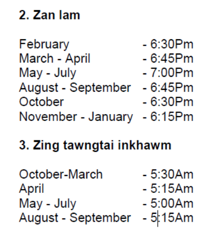

THUHMAHRUAI
Kohhran Inenkawlna dan tesep kan hman mek lai chu tih danglam tul a awm nual
ni a hriat anih avangin Kohhran Committee chuan a bu puma ennawnin siam that
ngai leh belh ngaite siamthain tun ami ang hi duan chhuah a lo ni leh ta a ni .
Kohhran hnuaia Fellowship hrang hrang leh Sub-Committee te pawh heng danin min
huam chinah chuan tha taka zawm theuh turin kan inngen a ni.Heng dan thar siamte
hi Dt 14.6.2013 atanga hman tan a ni .
(Upa F.Lalhlira) (Upa PC.Lianbuanga)
Chairman Secretary
Bung 1
CHHIAT TAWH LEH DAMLOH CHUNGCHANG
A. Chhiatni a Biak In khar chungchang
1. Kan Kohhran member thi an awm a, ruang awm lai chuan inkhawm loh tur a ni.
2. Hlamzui-ah erawh chuan inkhawm thulh loh tur a ni.
3. Kan Kohhran member ni kherlo pawh Salem VC huam chhungah mitthi an awm chuan ruang
awm lai chuan inkhawm loh tur a ni. Hei hian zing tawngtai inkhawm pawh a huam ang.
Hmun danga ruang kalpui tur anih erawh chuan inkhawm thulh phah loh tur a ni.
4. Khual khuaa thi , ruang la thleng hmanlo Salem a vui tur pawh nise, inkhawm thulh loh tur a ni.
B. Inralna, insunna leh insawngbawl chungchang
1. Kan Kohhran member thi te chu kohhran hmingin kuang chungah pangpar dah thin a ni ang.
2. Kan Kohhran member thite chu an thihni atanga Pathianni hmasa ber zing inkhawm ah Biak
Inah sunna neih thin a ni ang. Zirtawpni leh Inrinni a vuite erawh chu a karleh Pathianni
zing inkhawmah sunna neih thin a ni ang.
3. Kan Kohhran member thite vuina programme hi Kohhran OB leh chumi thlaa Deacon ten an
siam thin ang a, Bialtu Pastor a awm chuan sawm bawk tur a ni. Ralna programme pawh an
siam nghal ang.Inral hun hi zan li naah neih thin tur a ni a,hemi hun hi a remchang lo
anih chuan hun remchang hmasa ber ruat tur a ni.Fellowship ten an ral ve dawn anih chuan
Kohhran ral hunah hian an ral ve thin tur a ni. Inralna hi Rs 5,000/- a ni ang.
4. Kan Kohhran member - Pastor, Missionary leh hnathawhna avanga hmun danga awmte chhiat
an tawh a, kan Kohhrana vui an nih chuan member pangngai anga sawngbawl tur an ni ang.
5. Kan kohhranah mitthi an awmin Pathianni hmasa berah khawhar inah hruaitu inruat thin tur a ni
6. Ruang ni-ah hian zingkar leh chhunah a ranglama zai anih theihnan Deacon ten khuangpu turte
an ruat anga, bul an tanpui thin ang.
7. Lumen zan tantirah Deacon ten tawngtaia hun hman thin nise.
8. Hlamzuih chungchang chu Mizoram Baptist Kohhranin inkaihhruaina a siam anga hman ani ang.
9. Temporary member thi an awm a ruang kal chhuahpui anih chuan kohhran hmingin kuang chungah
pangpar dah a ni ang a,tawngtainaa thlah a ni ang. Tualchhunga phum anih chuan kohhran member
pangngai anga sawngbawl a ni ang.
C. Upa leh Rawngbawltute chungchangah
1. Minister/Upa/ Rawngbawltu thi an awm chuan Kohhran Comittee hmasa berah ngawi renga dingin sunna
hun hman thin tur a ni.
2. Minister/Upa/ Rawngbawltu zinga mi an thihin Upa leh Rawngbawltuten ral thin tur a ni a, ralna atan
Frame a thuziak leh Holy Bible pek an ni ang.
3. Minister/Upa/Missionary te an thih a Biak ina inkhawmpui anih chuan kohhran aiawhin mi pakhatin kuang
chungah pangpar dah nise,kuang hnunglamah Upa leh Rawngbawltute hi thut thin tur a ni. Tlarhmasaah
Kohhran OB leh kum lama upate thut thin nise.Incheina pawh uluk deuhvin, kawrchung leh necktie nen inthuam nise.
D. Damlohna leh chhiat tawkte tanpui dan.
1. Kan kohhran member damlohna avanga damdawiin a awmte chu Rs 500/- a tanpui a ni ang.
2. Zai (operation) tawka damdawiin a admit te chu Rs 2000/- a tanpui an ni ang.
3. Natna khirh bik eg. Cancer, Kal thlak, Dialysis tih ngai reng, adt chu Rs 3000/-
a tanpui theih an ni ang a, an nat dan leh dinhmun a zirin thla thum danah ennawn a
Rs 1000/- a tanpui theih an ni ang.
4. Damlohna avanga Medical Board in Mizoram pawn a refer te chu damdawiina an awm
chuan Rs 3000/-a tanpui theih an ni ang.
5. Kan Kohhran member chhiat tawk – Kangmei/Leimin/Thlipui /Accident adt., an
awm anih chuan Kohhran Committee in Emergency Meeting neiin tanpuina pek theih
a ni ang.
BUNG 2
KOHHRAN BUNGBEL LEH PROPERTY :
A. Property hawh theihte leh hawh man


B. Bungraw hawh/hman theih hun chhung.
Chhiatni ah bungbel leh thutthlengte hman anih chuan ni li leh zan li chhung man chawi lovin hman theih a ni ang. Hemi bak an la mamawh anih chuan Property Secretary hnenah hriattir tur a ni. Kohhran inkhawm leh Sunday School tibuai lo turin a hmangtuten hman tur a ni a, a dah fel leh pawh a hmangtute mawhphurhna a ni. Inneih, Pass lawm,Birthday lawm leh Lungphun adt., a tha lam thilah chuan ni hnih leh zan hnih hawh theih a ni ang. Hei aia rei an hawh emaw an kawl emaw anih chuan ni khat leh zan khat zelah Rs 50/- an bungraw kawl zawng zawng atan an chawi belh ang.
C. Bungraw hawh theih huam chin
Kohhran bungrua te hi Salem VC huam chin bakah chuan kan Kohhran memberte chauhvin an hawh thei ang.
D. Tihchhiat/Tihbo chungchang
Bungraw hawhtu-in eng bungrua pawh a tichhia/tibo anih chuan a tihchhiat siam man emaw,a thar emaw, a thar man emaw a chawi ang.
E. Bungraw hawh chungchanga hriat turte
1) Kohhran bungraw hawh tur chuan an hawh duh zat leh hawh turte ziakin Property Secretary hnenah dilna an thehlut hmasa tur a ni.
2) Bungraw hawh turte chuan an hawh dawnin a man an pe hmasa tur a ni.
3) Kohhran pawn lama rawngbawlnaa hman duhna a awm chuan Kohhran Committee in a ngaihtuah ang.
4) Kan Kohhran nilo, chhiat tawkte tan thutthleng (bench) hawh phal a ni. 5) Kan kohhran member nilo, a chenpuite kan kohhran member an nih chuan kohhran bungrua hman phal a ni ang. 6) Bungraw hawh turte hi an hmanna tur a zirin phalsak loh theih an ni ang. 7) Sacrament No,Tray leh Property dang tarlan lohte hawh chhuah chungchang chu Secretary thuneihna a ni ang. 8) Kohhran Dan puitlinga nupui/pasal nei chuan kohhran bungrua a thlawnin an hmang thei ang.
Bung 3
BIAK IN CHOWKIDAR CHUNGCHANG :
A. Chowkidar lak dan tur.
1.Kohhran Committee in tha a tih chuan Biak In Chowkidar tur hi Advertisement siamin a la thin ang. Advertisement siam lo pawhin a mi it zawng chu a la thei ang.
2. Chowkidar atan chuan awmchilh thei ngei a ni tur a ni.
B. Qualification.
Biak In Chowkidar hna diltu chu Baptist Kohhran mi, dan zawh kim, zuin lo, nulat tlangval kawnga mi invawngfel, Pathian rawngbawlna ngaipawimawh mi a ni tur a ni. Ruihtheih thilah a inhnamhnawih tur a ni lo
C. Term
Chowkidar hi kum hnih (February - January) chhung atan lak thin tur a ni.Kohhran committee in a tul dan a zirin a extend thei ang.
D. A dinhmun.
1. A awmdan leh hnathawhah Kohhran Committee in lungawi lohna a nei anih chuan a term ral hma pawhin a ban thei ang. Committee in a tul angin a zilhin emaw a enthlak hnu a mit tlunglo chu ban tur an ni. Ban anih chuan a thawh chin chiah hlawh pek a ni ang.
2. Hun rei deuh thangbo tur anih chuan Kohhran Secretary a dil hmasa tur a ni. Chutiang hunah chuan a aiawh midang thawktu a dah tur a ni. Tin, damlohna avanga a duty a tih theih dawnloh chuan Kohhran Secretary a hrilh tur a ni.
3. A thawh hunbi kim hmaa ban a duh chuan, a ban hma thla chanve ( ni 15) a la awm tihin Kohhran Secretary hnenah banna a thehlut tur a ni.
4. Heng a tarlan loh thil tul bik a awm chuan Kohhran Secretary a hriattir thin tur a ni.
E. Hlawh/Lawmman.
Chowkidar hlawh/Lawmman chungchang hi Kohhran Committee in tul leh tha a tih angin a ngaihtuah thin ang.
F. Chowkidar mawhphurhnate. Tih turte.
1) Kohhran bungrua enkawl leh vawn himah mawh a phur ang a, a enkawl felin a fai tur a ni.
2) Inkhawm, Inneih inkhawm, Khawmpui lian leh programme pawimawh dangah dar a vua ang.
3) Biak In kawngka leh tukverh te hawn leh khar a kutah a awm ang
4) Biakin chhung leh a bul hnai vel leh Hallte a tifai thin ang.
5) Kohhran bungrua hawh anihin an hawh zat a chhinchhiah thin ang.
6) Biak In a hlawhfa chhawr anihin thingpui a lumsak thin ang.
7) Biak In leh a compound vantlang tan kaltlang mai theih lohvin a vawng him ang.
8) Committee kohna sem, Tui & Electric bill pek leh Gas.,adt lak te a ti thin ang.
9) Committee room leh Hall hrang hrangah Fellowship leh Sub committee ten meeting an neihin a tul chuan thingpui a lumsak ang
Tih loh turte
1) Ama thuin Kohhran bungrua reng reng tumah a hawhtir tur a ni lo.
2) Biak In compound ah ran vulh phal a ni lo.
BUNG 4
INNEIH CHUNGCHANG :
Thilpek
Kohhran Dan puitlinga innei kohhrana an awm thin hi a lawmawm a, kan Kohhran member Dan puitlinga nupui/pasal neite chu lawmpuina Rs 3000/- pek an ni ang a, kan kohhran member ve ve innei an nih chuan Rs 6000/- pek an ni ang. Lawmpuina thilpek hi Kohhran leh Kohhran hnuaia Fellowshipten Biak In chhungah, inneih inkhawm naah pek a ni ang. Mimal leh Pawlho thilpek pe duh an awm chuan Joint Reception-ah emaw, inneih inkhawm ban thlalak hmain hlanna hun siam a ni ang.
B. Biak In hman chungchang
1. Inneih Inkhawm bana Mo theh ah hian lehkhamawi cheh nawi leh a mum chi te hi hman phalloh a ni a, a spray chi chauh hman phal a ni.
2. Kan kohhran member kohhran hriatpuia inneite tan Biak In compound ah ruaitheh theih a ni anga, a hman man Rs 2000/- a ni ang.
3. Biak In compound ah erawh chuan eirawngbawl phal a ni lo.
4.Ruaitheh nan kohhran bungrua - Food warmer, thleng,no,chawhtawlh leh fiante a thlawnin an hmang thei anga, food warmer a hman tur spirit leh steelwool chu an intum ang. Heng bungrua hmante hi kohhranin a tifai ang.
5. Ruaithehna hmun atan Biak In verandah tih loh Hulhiap leh hall hrang hrangte hman phal a ni.
6. Ruaithehna hmunhma hi a hmangtu ten tihfai leh vek tur a ni.
7. Diposable cup & plate hman phal a ni anga, a hmangtuten an hman zawhah hmundangah an senghawi fel nghal vek ang.
C. Joint Reception hmang turte tan.
1. Joint Reception Biak In Hall a hmang duhte chuan Kohhran Secretary hnenah dilna siam tur a ni
2. Joint Reception hman hun chhungin Mo leh a pasal an awm reng tur a ni.
3. Joint Reception hmang turte chuan Thingpui lumna Gas/thing an intum ang.
4. Tlai lam Mo hruai tibuai lovin Joint Reception hi hman tur a ni.
5. Joint Reception hmangte chuan an tihhnawk an tifai leh vek tur a ni.
D. Dantea innei turte tan
1.Dantea inneite chu Biak In chhungah thla an lak phal a ni lo.
2.Dantea innei ten inneih lawmpui tura kohhrante an sawm anih chuan Biak Inah puan remtih a ni.
3.Dantea innei te chuan Biak In Hall an hmang thei ang
Bung 5
SOUND SYSTEM, MUSICAL INSTRUMENT LEH PROJECTOR CHUNGCHANG:
1. PA Set/SOUND SYSTEM :
a) Biak In chhung, Gospel Centenary Hall leh Hall No I a hman laite hi, hmun danga hman leh kenchhuah phal a ni lo. Kohhran leh Fellowship programme lian thamah, Biak In hungchhunga hman a tul a nih chuan Kohhran Chairman, Secretary Worship & Music Comt OB te hriatpuina in hman theih a ni ang. Hman zawh veleh a hmangtu in a ngai angin a rem fell eh vek tur a ni ang.
b) Store room a dahthat te erawh hi chu, Kohhran hnuaia Fellowship leh Sub committee ten rawngbawlnaah hman a tul anih chuan, hmun dangah pawh an hman/ken phalsak a ni ang a, Kohhran Chairman leh Secretary an hriattir hmasa tur a ni. Ken chhuah tur chu Worship & Music Committee in rem a lo ruatpui thin ang.
2. MUSICAL INSTRUMENT :
a) Keyboard:
i) Biak In chhunga hman lai, KORG Pa 300 hi hmun danga lak chhuah loh tur a ni Amaherawhchu Kohhran zaipawlten rawngbawlna pawimawh bik an neih dawn chuan an keng chhuak thei ang a inkhawmnaah a aia hmantur an ngaihtuah ang.
ii) Keyboard dang, Hall hrang hranga dahte hi chu , Kohhran hnuaia Fellowship leh Sub committee leh zaipawl ten rawngbawlnaa hman a tul anih chuan, hmun dangah pawh an hman/ken phalsak a ni ang.
iii) Kan kohhran member thi an awmin, lumen leh khawhar lenpuinaah hman a tul anih chuan hman theih a ni ang.
b) Drum set :
i) Electronic Drum set : Roland TD 15K hi Kohhran hnuaia Fellowship, Sub- Committee leh Zaipawlten rawngbawlna-ah hman a tul anih chuan, hmun dangah pawh an hman/ken phalsak a ni ang. Drum set hi power supply leh UPA/Stabiliser mumal tak nena hman thin tur a ni ang. Hmundanga ken chhuah anihin a phurh velnaah him taka pack thin tur a ni.
ii) Acoustic Drum set : Kohhran hnuaia Fellowship, Sub-Committee leh Zaipawlten rawngbawlna-ah hman a tul anih chuan, hmun dangah pawh an hman/ken phalsak a ni ang. Hmundanga ken chhuah anihin a phurh velnaah him taka pack thin tur a ni.
c) Bass Guitar leh Combo :
CORT Bass Guitar emaw, Ibanez Bass Guitar (Biak Ina hman lai nilo) te hi kohhran hnuaia Fellowship, Sub- Committee leh Zaipawlten rawngbawlna-ah hman a tul anih chuan, hmun dangah pawh an hman/ken phalsak a ni ang.
d) Acoustic Guitar :
Ibanez Acoustic Guitar hi Kohhran hnuaia Fellowship, Sub-Committee leh Zaipawlten rawngbawlna-ah hman a tul anih chuan, hmun dangah pawh an hman/ken phalsak a ni ang. Hmundanga ken chhuah anihin a phurh velnaah him taka pack thin tur a ni.
e) Khuang :
Chhiat tawkte inah lak theih a ni anga, chutiang hunah chuan Biak In inkhawmnaa hman lai nilo lak tur a ni.
3. PROJECTOR :
Kohhran leh a hnuaia Fellowship leh Sub-committees ten an hmang thei ang a, rawngbawlna atan an keng chhuak thei bawk ang. Lunglawn Pastor Bial chhunga bial huap programme ah chuan hawh chhuah theih a ni ang. Projector hmang tur chuan Kohhran Secretary an dil hmasa ang. Bial huap programme a hawh anihin nikhat atan Rs 500/- a ni ang.
Heng hmanrua te hi a hmangtu ten uluk leh dim taka hman thin tur a ni a, an hman zawhah a dahna ngaihah fel taka dah tha lehin, tihchhiuat palh emaw, chianglo palh emaw a awm anih chuan, Worship & Music Secretary hrilh hriat thin tur a ni ang.
BUNG 6
INKHAWM DAR VUAK HUN :
1. Zinglam : Dar 9:45 ah dar vuak a ni ang a, dar 10:00 ah tan a ni ang. Amaherawhchu Hunpui bik Krismas, Kumthar, Missionary Day leh Good Friday ah te dar 10:30 ah dar a ri ang a, Palm Sunday, Easter Sunday leh Krismas Prog. hman tan atanga Kumthar Sunday School kai hma Pathianni thlengin zing dar 10:00 ah dar vuak a ni bawk ang.
Bung 7
INENKAWLNA DAN DANGTE :
A. Committee room/Hall hman chungchang
Kohhran hnuaia Fellowship ten Committee Meeting/inpawlhona an neih rual theih thin avangin, Committee room / Hall hman chungchangah hetiang hian dan siam a ni.
1. Kohhran Committee in a hmang duh anih chuan pawl dang tan hman a rem lovang.
2. Committee Meeting/Inpawlhona hmun inkoh thuah a awmloh nan Kohhran Secretary hriattir hmasak tur a ni.
B. Sub-Committee chungchang
1. Kohhran hnuaia Sub-committees, BCM Constitution in a tarlante chu BCM Constitution angin hruaitu(OB) thlanna pawh kalpui ur a ni a, Constitution a awmlo te chu Kohhran Committee in tha a tih angin hruaitu thlanna a kalpui ang.
2.Sub-Committees Para Church Ministry hnuaia awmte( Bible Society, TLM, adt., ) chu committee member tur Kohhran Committee in a thlang chhuak anga, chumi Committee chuan Kohhran Committee hriatpuiin OB a thlang thin ang.
3.Para Church Ministry hnuaia Sub- Committees te hian Planning leh Budget Kohhran Committee pawmpui sa an neih thin loh avangin, Kohhran chhunga an hmalak tum dan leh sum thawhchhuahna turah Kohhran Committee remtihna an la hmasa thin tur a ni.
C. Fellowship/Sub-Committee kaihhruaina
1.Kohhran hnuaia Fellowship/Sub-Committee te an Planning leh Budget kohhranin a pawmpui bakah sum thawhchhuah tur leh senso hautak tur thilah chuan Kohhran Committee remtihna tel lovin, anmahni thu-a hmalak phal a ni lo.
2.Planning a awmlo, hmalakna tur a awm anih chuan Kohhran Committee ah an thlen ang a, Kohhran Committee in a remti emaw, a hnawl emaw thei ang.
3. Kohhran Committee remtihna lovin Fellowship/Sub-Committee ten Kohhran chungchang ngaihtuah turin Joint Meeting an koh phal a ni lo.
4. Fellowship/Sub-Committee te Kohhran dang/Bial pawn a an fehchhuah dawnin Kohhran Committee anhriattir hmasa thin tur a ni.
5. Kohhran hnuaia Fellowship/Sub committee ten inkhawm leh fellowship nan nilo, thildanga Biak In compound hman an duh chuan kohhran committee an dil tur a ni.
6. Fellowship/Sub committee ten kohhranin report form a siam hmangin kumtawpah an pawl hmalak na report Kohhranah an thehlut thin ang.
D. Missionary tanpui chungchang.
1. Kan kohhranah Missionary Furlough Deputation Programme hmang an awm chuan hetiang hian tanpui an ni ang. a) Appeal nei an nih chuan an appeal neih atan Rs 10,000/- leh anmahni hman tur Rs 5,000 a vaiin Rs15,000/- pek thin tur a ni. b) Appeal neilo te pawh Rs 5,000/- a tanpui thin tur a ni. c) Kan Kohhran atanga chhuak Missionary Furlough hmangte kan Kohhrana furlough programme hmang kherlo pawh Rs 5,000/- a tanpui thin nise, kan Kohhranah programme siam sak ngei nise.
2. Kan kohhran member, missionary a kal turte chu kohhranin Rs 5,000 in a tanpui thin ang. Hei hian short term, voluntary leh a ngheta thawkte a huam ang.
3. Missionary tupawh Kohhran Committee in tanpui tul nia a hriat leh tanpui ngai a tihte chu tha a tih angin a tanpui ang.
E. Worship Service chungchang.
1. Inkhawm hruaitu (Leader) hi Deacon-a ruat Kohhran Upaten an inhman chhawk ang.
2. Inkhawma thilpek chu a khawntuten an dinpui fel hnuah hlan a ni ang.
3.Nilai zan leh Inrinni zanah te Worship Leader awm lovin hun changtu in a hmang nghal thin ang.
F. Deacon chungchang.
1. Deacon te hi kumtin an group sawi danglam thin tur a ni..
2. Deacon te hian zing tawngtai hun hmangtu tur leh tawngtai thupuite an siam thin ang.
3. Deacon te hian an Deacon thlaa chanvo hrang hrang neite ko khawmin infuih thin tur a ni.
4. Deacon te hian Krismas, Kumthar & Good Friday zaikhawm programme an siam thin ang a, programme ti hlung tur leh ti hlawhtling turin theih ang angin hma an la ang. Tin, Dan puitlinga innei an awmin a tul angin mawhphurhna an la ang.
5. Chhiatni-ah OB leh Deacon ten mawhphurhna an la ang
G. Hun inpek chungchang.
1. Hun changtuin mahni hun an hmang thei dawnlo anih chuan Deacon te hriattir tur a ni a, annin hun hmangtu tur chu an ruat thin ang.
2. Mahni hun duhsak zawngte (Preaching list a tello) pek tum chuan BCM Constitution in Pulpita lawn thei a a ruatte chauh hun pein, hun pek hmain Secretary a hriattir hmasa ang a, anin thutlukna a siampui ang.
3. Hunpuiah mahni duh thuin mahni hun midang pek phal a ni lo.
H. Kohhran Upa pem pawm thu.
Kohhran Upa hmundang atanga kan kohhrana lo pemte chu lawmluh ni atanga thlaruk (6) hnuah an chungchang ngaihtuah theih a ni ang.
I. Nau hlan chungchang.
Nauhlan hi thla thum (3) dan zelah neih thin tur a ni. Bialtu Pastor-in a hlan thin ang a, Pastor a remchan loh chuan Inkhawm hruaitu (Leader) in a hlan thin ang.
J. Kohhran Library chungchang.
1. Librarian atan hian Kohhran Asst.Secretary ni lai apiang an tang zel ang..
2. Library tih changtlun nan kumtin Rs 3000/- man hu aia tamlo lehkhabu tha leh rotling lei thin nise, Rs 3000/- bak hman tulna a awm anih chuan Kohhran Committee in rel thin tur a ni.
3. Lehkhabu lei tur duhthlan chungchang leh a lei chu Kohhran Librarian leh Asst.Treasurer mawhphurhna a ni ang.
K. Dan ennawn thu
Tualchhung Kohhran Inenkawlna dan hi Kohhran Committee in tul a tih hunah ennawn thin a ni ang.